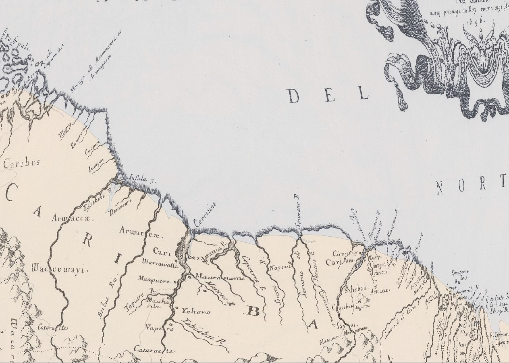

Special Topics - Final Paper
Name: Pepijn Roos
Student Number: 1651331
Professor: Dr. P. Vierthaler
Special Topics: Final Paper
Date of submission: xx-xx-xxxx
Word count: xxxx
Code provided by Vierth
Sanson: 1664-1713
Popple: 1714-1756
Faden: 1756-1793
Pinkerton: 1793-1825
Annex

Figure I: Slave Voyages Database, 'Screenshot of the site', http://www.slavevoyages.org/, as accessed on 19-04-2018.

Figure II: P. Roos, 'Part of the imported database created by the author', based on: Slave Voyages Database, http://www.slavevoyages.org/, as accessed on 19-04-2018.

Figure III: A.O. Thompson, 'Amount of slaves in the Guyana colony: Berbice, Demerara and Essquibo', in: Maroons of Guyana. Problems of slave desertion in Guyana, c. 1750-1814 (Cave Hill 1976) 4.

Figure IV: J. Postma, 'The Dutch slave trade to Surinam, 1668-1803', in: J. Postma, 'The dispersal of African slaves in the West by Dutch slave traders, 1630-1803', in: J.E. Inikori and S.L. Engerman ed., The Atlantic Slave trade. Effects on economies, societies, and peoples in Africa, the Americas and Europe (London 1992).

Figure V: P. Roos, 'G. Sanson's Guyana Coast (London 1656) map georeferenced in QGIS 3.0.0 on the modern day coastline of Guyana and Surinam.

Figure VI: P. Roos, 'Graph representing the amount of slaves transported to the colonies of Surinam, Demerara , Berbice and Essequibo, 1658-1803, dots per decennium connected by a line, based on: data from J. Postma, 'The dispersal of African slaves in the West by Dutch slave traders, 1630-1803', in: J.E. Inikori and S.L. Engerman ed., The Atlantic Slave trade. Effects on economies, societies, and peoples in Africa, the Americas and Europe (London 1992). Base code provided by: M. Bostock, 'Multi-series line chart', https://bl.ocks.org/mbostock/3884955, as accessed on 27-5-2018.
Figure VII: P. Roos, 'Graph representing the yearly amount of slave transports to Surinam by origin of the ship between 1664-1825', based on: Slave Voyages Database, http://www.slavevoyages.org/, as accessed on 25-05-2018.

Figure VIII: P. Roos, 'Graph representing the yearly amount of slave transports to Berbice by origin of the ship between 1668-1808', based on: Slave Voyages Database, http://www.slavevoyages.org/, as accessed on 25-05-2018.
Figure IX: P. Roos, 'Graph representing the yearly amount of slave transports to Demerara by origin of the ship between 1768-1808', based on: Slave Voyages Database, http://www.slavevoyages.org/, as accessed on 25-05-2018.

Figure X: P. Roos, 'Graph representing the yearly amount of slave transports to Essequibo by origin of the ship between 1658-1781', based on: Slave Voyages Database, http://www.slavevoyages.org/, as accessed on 25-05-2018.

Figure XI: P. Roos, 'Screenshot of the PJ.5s visualization representing the arrival of slave ships in Surinam, Berbice, Demerara and Essequibo between 1757-1793'. Base code provided by: P. A. Vierthaler.